Online Exhibit → Dissidents
Dissident Movement
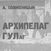
Samizdat was the name for underground literature that opponents to the Soviet government secretly wrote and distributed within the Soviet Union. Intellectual opposition to Communist rule emerged in the 1950s and 1960s and formed into a human rights movement.
From the late 1960s, these "dissidents" systematically collected and attempted to publicize Soviet human rights violations and conditions in labor camps for political prisoners. This information circulated among intellectuals in typescript and handwritten samizdat bulletins. Frequently, dissidents sent samizdat materials to Western countries in hopes of publicizing the situation in the Soviet Union.
In 1973, Aleksandr Solzhenitsyn’s samizdat book The Gulag Archipelago was published abroad. The book was a sensation, as it laid out for the world the history of the Gulag. Soon after, Solzhenitsyn was stripped of his citizenship and exiled from the Soviet Union. Soviet authorities constantly battled to stop the actions of human rights activists, arresting and imprisoning many of them.

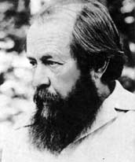
Aleksandr Solzhenitsyn’s The Gulag Archipelago was first published in France in 1973. Solzhenitsyn used the word archipelago as a metaphor for the camps, spread throughout the Soviet Union like a chain of islands.
Courtesy of the International Memorial Society.
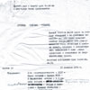

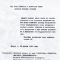

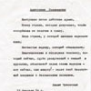

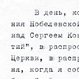

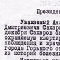

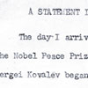

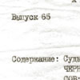

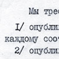
Examples of samizdat bulletins.
Courtesy of the Gulag Museum at Perm-36.The following is a translation of “Moscow Appeal,” a protest lodged by noted human rights activists against the repression of Aleksandr Solzhenitsyn for the publication of The Gulag Archipelago abroad.
MOSCOW APPEAL
...anyone who is acquainted with Solzhenitsyn’s book that aroused such anger among the USSR’s leaders, knows that his ‘betrayal’ lies in the fact that with breathtaking force he exposed to the whole world the monstrous crimes committed in the recent past in the USSR. Tens of millions innocent people: communists and non-communists; atheists and believers; intelligentsia, workers and peasants; people of different nationalities all fell victim to the terror that hid itself under the slogans of social justice.
We demand:
- publish GULAG Archipelago in the USSR and make it available to each person in the country;
- publish archival and other materials giving a full picture of the activities of the Cheka, GPU, NKVD, MGB;
- establish an international public tribunal for investigation of the crimes committed;
- protect Solzhenitsyn from persecution and grant him the possibility to work in his homeland.
We ask all mass media to circulate our appeal. We also ask all cultural, public, and religious institutions to establish national committees for collecting signatures under this appeal.
A. Sakharov, E. Bonner, V. Maksimov, M. Agurski, B. Shragin, P. Litvinov, Y. Orlov, priest S. Zheludkov, A. Marchenko, L. Bogoraz.
February 13, 1974
Moscow

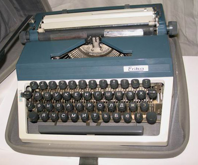
Samizdat materials were created on such portable typewriters. Dissidents could not use larger typewriters because they were all registered by the KGB, the secret police.
Courtesy of the Gulag Museum at Perm-36.Using very thin paper and carbons, samizdat writers were often able to type eight to ten copies at a time. Many who received copies of samizdat materials themselves retyped additional copies for distribution to their friends. Participation in the creation and distribution of samizdat could result in imprisonment.

Andrei Sakharov and Elena Bonner. Prominent figures in the Soviet human rights movement. In 1980, Sakharov was forcibly exiled from Moscow to the closed city of Gorky to live under KGB surveillance and to disrupt his contact with activists and foreign journalists. His wife was permitted to travel between Moscow and Gorky. With her help, Sakharov was able to send appeals and essays to the West until 1984 when she was also arrested and confined by court order to Gorky.
Courtesy of the International Memorial Society.Human rights activists managed to publish the Chronicle of Current Events, an underground samizdat human rights bulletin, continuously from 1968 to 1982 despite violent persecution of its creators and distributors in labor camps and forced psychiatric imprisonment. The Chronicle documented human rights violations throughout the Soviet Union.

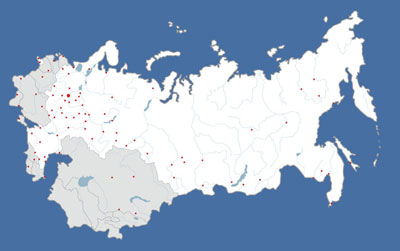
This map displays the locations of human rights violations in the Soviet Union as reported in the Chronicle of Current Events.
Courtesy of the Gulag Museum at Perm-36.
With such radios produced in Latvia, one of the Soviet republics, people living in the Soviet Union could receive the signals of Radio Liberty, Voice of America, and the BBC. They could hear in their native languages news of the human rights movement and other forbidden subjects. Radio Liberty regularly broadcast reports from the Chronicle of Current Events. Radios produced in other regions could not receive the transmission of these signals.
Courtesy of the Gulag Museum at Perm-36.
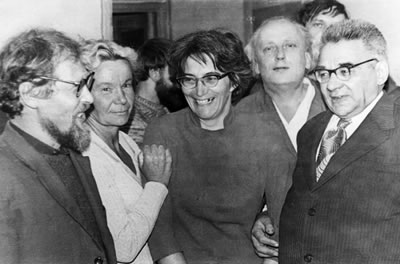
Members of the Initiative Group for the Defense of Human Rights: Sergei Kovalev, Tatiana Khodorovich, Tatiana Veilikanova, Grigorii Pod’iapolskii, and Anatolii Krasnov-Levitin, 1974.
Kovalev, Khodorovich, and Veilikanova openly took responsibility for distribution of the Chronicle of Current Events in May 1974 after the KGB had arrested several of their colleagues and threatened others.
Courtesy of the International Memorial Society.Online Exhibit | Reflections | Traveling Exhibit | Teacher Resources | About
© 2006–2021, Center for History and New Media, George Mason University.
Samizdat. “Self-publishing.” Opposition intellectuals circulated their bulletins and manuscripts like those pictured above in small editions manually copied and retyped. Samizdat appeared in nearly every language of the Soviet Union.